Capturas reais do canvas no Chrome. Clique em cada imagem para abrir em resolução original. Os botões permanecem com 26 px visuais nos três zooms. Cards, valores e cores foram preservados. Esta entrega aguarda validação visual.
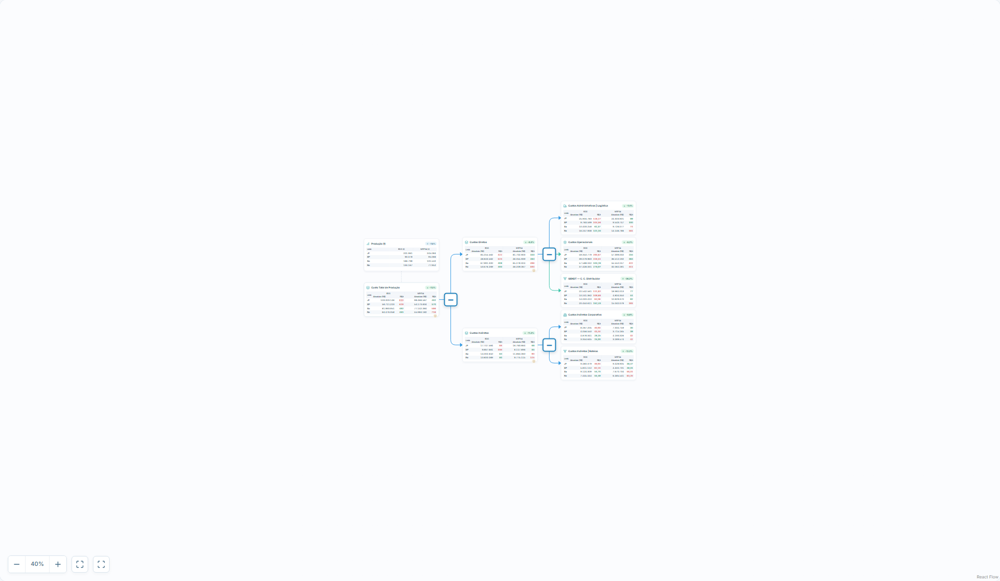
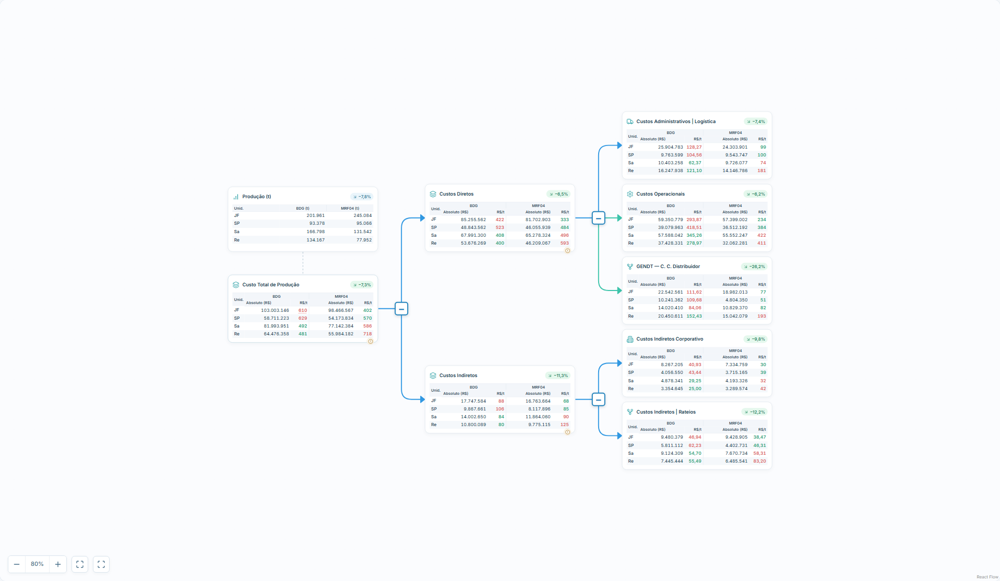
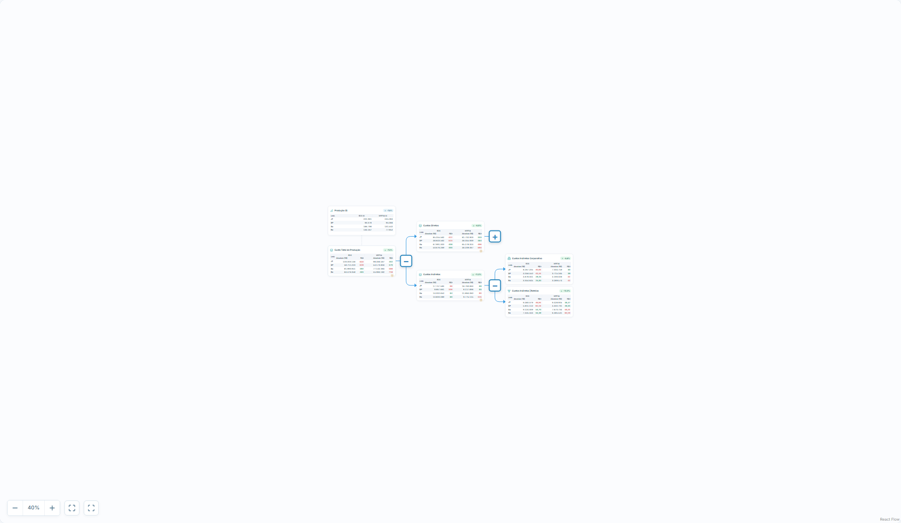
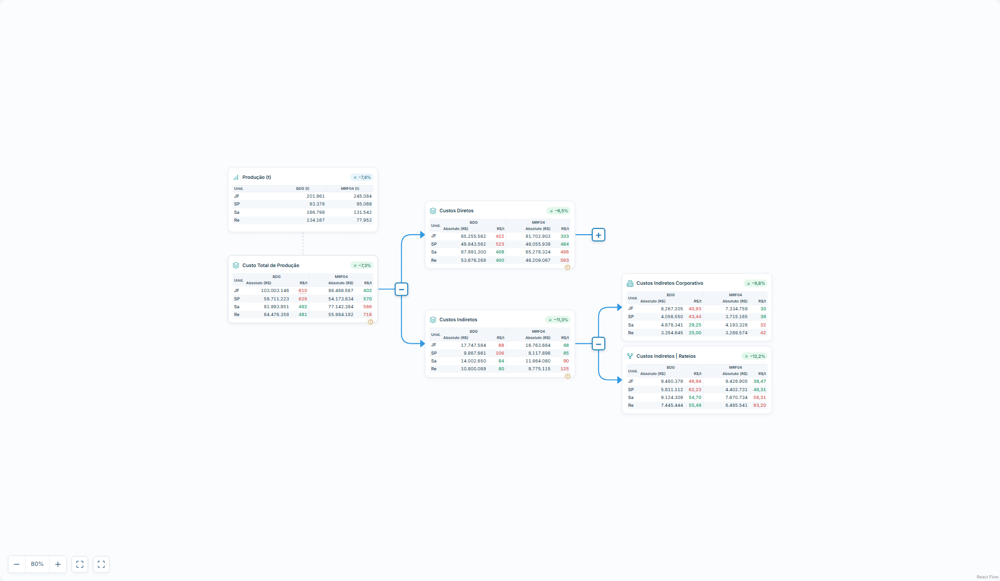
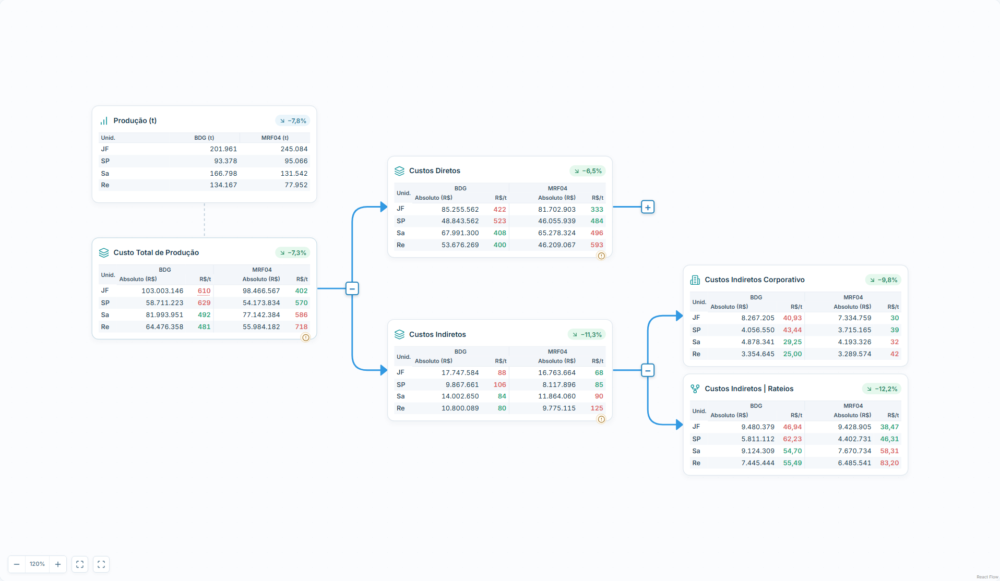
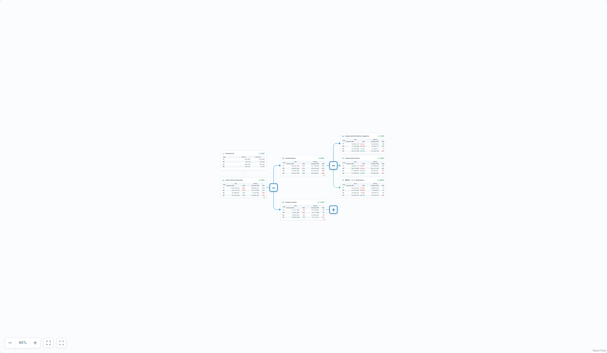
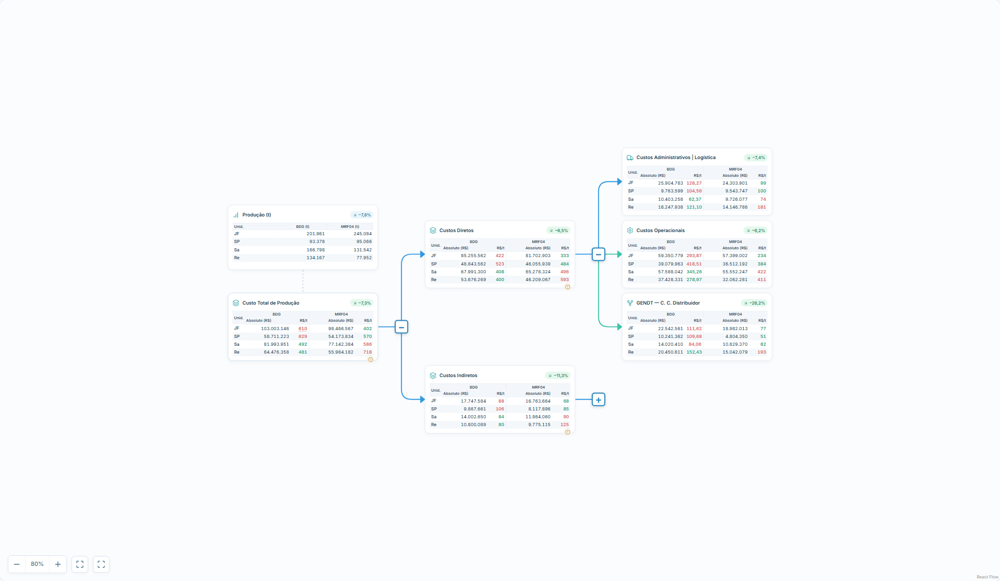
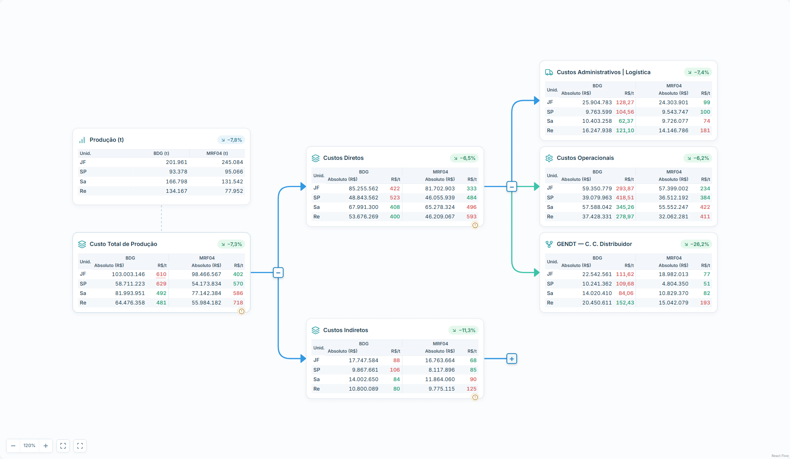
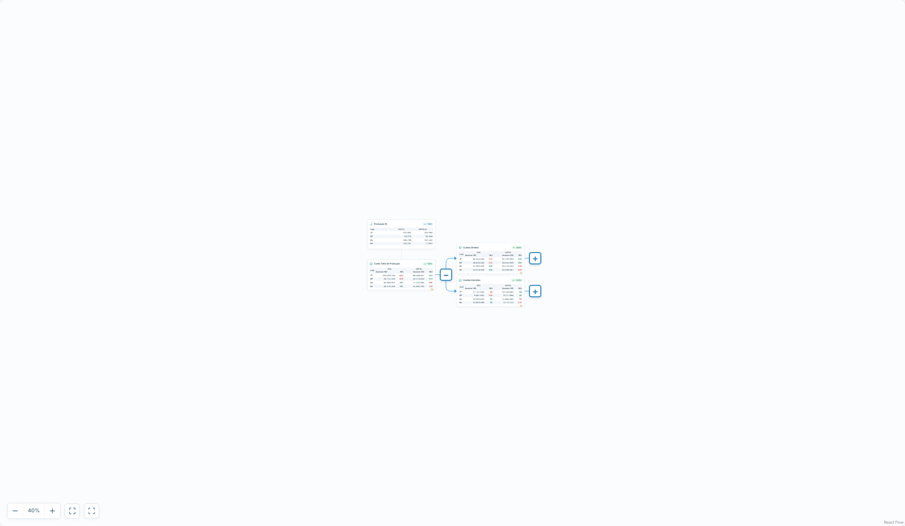
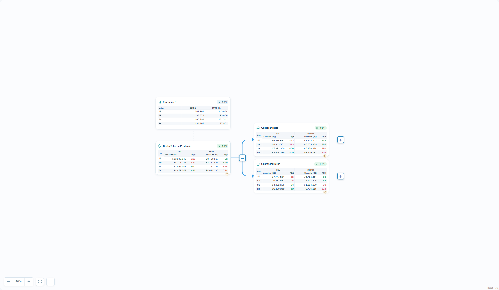
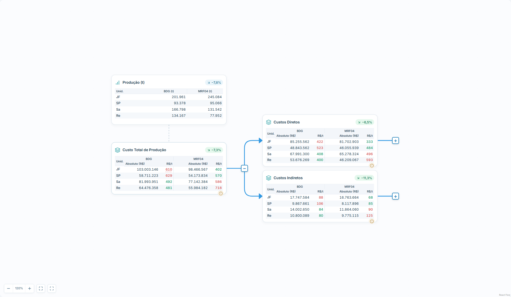
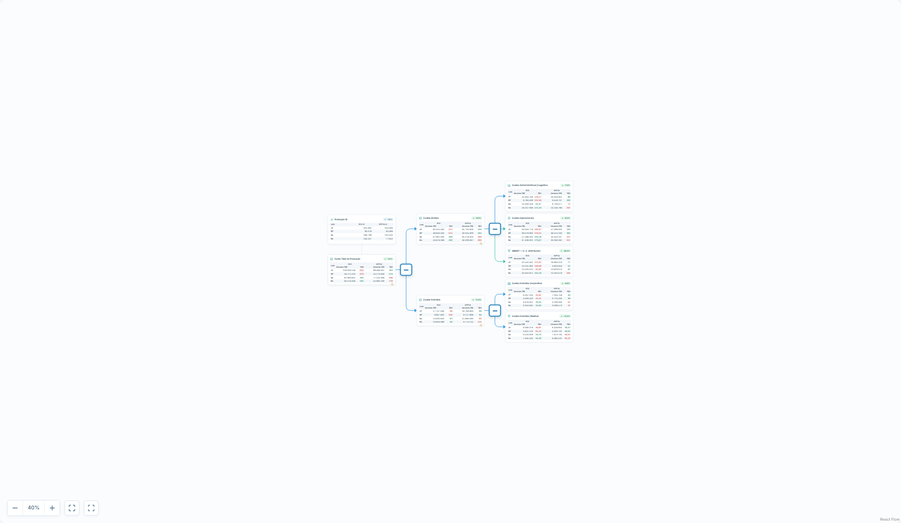
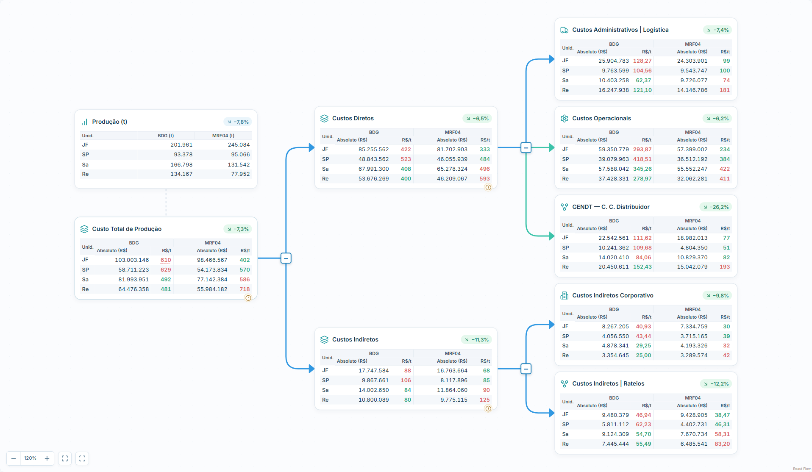